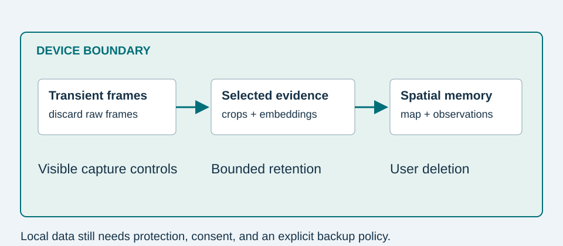

A proposed implementation sequence
- Enroll: ask the user to name an object and capture several views. Store user-confirmed examples and a stable ID.
- Observe: use a mobile detector for candidates and an appearance encoder for identity. Begin with deliberate scanning sessions so consent and coverage are visible.
- Remember: maintain local records with timestamps, evidence crops, coordinates, and map versions. Bound the history and allow deletion by object or date.
- Retrieve: a typed object picker or simple phrase parser resolves a known name. Read the record and compute geometry when aligned. A large language model is unnecessary for this path.
For a more flexible language interface, a small local model could map phrases to known IDs. It should not invent locations. A vision-language model could request a closer view when recognition is ambiguous, but its cost, privacy behavior, and benefit would need measurement. Speech recognition must also be explicitly provisioned for offline use; “on-device vision” does not guarantee every component is offline.


Model and representation trade-offs
| Option | When it helps | What to measure |
|---|---|---|
| Small detector + enrolled embeddings | Limited personal inventory and predictable object types | Missed small objects, identity confusion, sustained latency |
| Query-conditioned detector | Retrospective search for a supplied exemplar | Full-history storage and time per query |
| Open-vocabulary / vision-language model | Unfamiliar concepts or complex requests | Memory, energy, grounding errors, offline availability |
Quantization reduces numerical precision. FP32 weights use four bytes each; INT8 weights use one, so ten million weights occupy approximately 40 MB versus 10 MB before metadata and runtime buffers. Full integer conversion needs representative calibration data, and accuracy must be rechecked. Google documents these conversion choices and their hardware constraints. [7] A smaller model file does not guarantee lower end-to-end latency.
A budget you can measure
For an illustrative 256-element FP16 embedding, storage is 512 bytes per observation. At 100 objects and ten retained observations each, embeddings alone occupy 512,000 bytes. A 20 KB crop for each observation adds about 20 MB. Map data, database overhead, model weights, and runtime tensors are additional. These are arithmetic examples, not measured application sizes.
Start with sparse detector execution and tracking between detections, but evaluate the consequences of missing a brief object appearance. Record median and 95th-percentile latency, memory use, battery drain over a fixed session, and performance after the phone warms up. Report the phone, operating system, input resolution, and model version with every result.
Accessibility and control
Offer large controls, readable contrast, plain language, replayable speech, and a visual transcript. Let users choose text, sound, or an image instead of requiring augmented reality. W3C discusses how accessibility requirements address many age-related changes. [8] Validate the actual workflow with intended users; this tutorial does not establish a clinical benefit.
Local storage still reveals information about a home. Protect files with platform security, exclude sensitive records from unintended backups, make recording visible, and provide a clear erase control. Personalization should support user choice, including choosing not to record.